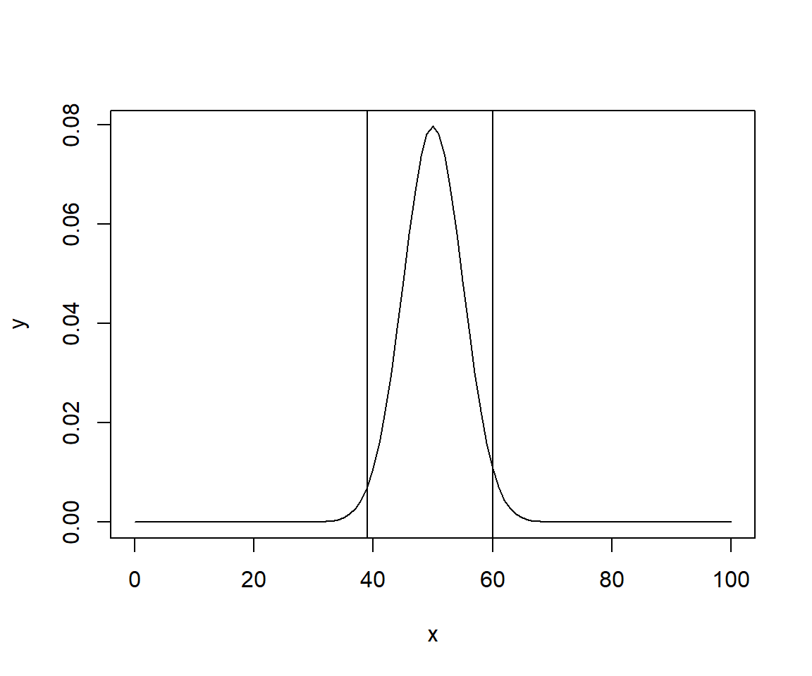

qbinom(0.025, 100, 0.5)[1] 40pbinom(40, 100, 0.5)[1] 0.02844397pbinom(39, 100, 0.5)[1] 0.0176001qbinom(0.975, 100, 0.5)[1] 60pbinom(60, 100, 0.5)[1] 0.9823999pbinom(59, 100, 0.5)[1] 0.971556Bij een experiment waarin het toeval een rol speelt weet je van te voren niet wat de uitkomst van een waar te nemen grootheid is. Wel kunnen meestal de mogelijke uitkomsten worden aangegeven, denk aan een worp met een dobbelsteen. De kansverdeling geeft aan hoe de kansen verdeeld zijn. De waar te nemen grootheid wordt ook wel stochastische variabele, stochastische grootheid, toevalsvariabele, kansvariabele of stochast genoemd.
In de statistische toetsingstheorie worden hypothesen (veronderstellingen) gemaakt over de kansverdeling van de kansvariabele. Het doel van een statistische toets is: door middel van een steekproef een of ander effect aan te tonen. De gevolgde methode is dat aangenomen wordt dat het effect niet bestaat. Dit wordt de nulhypothese genoemd, aangeduid met \(H_0\). Op basis van de gevonden resultaten wordt bekeken of deze veronderstelling stand kan houden.
Als alternatieve hypothese, aangeduid met \(H_1\), ga je uit van de veronderstelling dat het gezochte effect wel bestaat. Het is deze alternatieve hypothese die men tracht te “bewijzen”. Hoewel de alternatieve hypothese vaak het complement is van de nulhypothese (en dan eigenlijk overbodig), hoeft dit niet noodzakelijkerwijs het geval te zijn.
Na het formuleren van de hypothesen formuleer je een toetsingsgrootheid. Deze moet de informatie uit de steekproef samenvatten in een getal dat als maatstaf kan functioneren om de nulhypothese al dan niet te verwerpen. Veel gebruikte toetsingsgrootheden zijn: (steekproef)gemiddelde, (steekproef)fractie en (steekproef)variantie.
Door uit te gaan van de nulhypothese is het mogelijk om een kansverdeling van de te onderzoeken variabele op te stellen. Hierdoor kun je uitspraken doen over de mogelijke waarden van de steekproefresultaten.
Bereken de waarde van de toetsingsgrootheid uit de steekproefresultaten
Het gaat er nu om dat voor de toetsingsgrootheid aangegeven wordt welke waarden als aannemelijk beschouwd kunnen worden en welke waarden als uitzonderlijk, gegeven \(H_0\). Als de steekproef een uitzonderlijke uitkomst oplevert, dan wijst dat er op dat de geldigheid van \(H_0\) in twijfel moet worden getrokken. Dan wordt \(H_0\) verworpen ten gunste van \(H_1\). De verzameling uitkomsten kunnen in twee gebieden verdeeld worden:
Als criterium om tot een dergelijke verdeling te komen wordt de kans genomen dat de nulhypothese ten onrechte verworpen wordt. Dit wordt ook wel de onbetrouwbaarheid of fout van de eerste soort genoemd en aangeduid met \(\alpha\). De waarde van \(\alpha\) wordt meestal vooraf gekozen.
Het kritieke gebied volgt uit de kansverdeling van de toetsingsgrootheid en kan dus bepaald worden zonder over steekproefresultaten te beschikken. het steekproefresultaat wordt in feite achteraf vergeleken met het kritieke gebied.
Als alternatief voor de bepaling van het kritieke gebied kan ook de overschrijdingskans bepaald worden van de gevonden waarde van de toetsingsgrootheid. Deze overschrijdingskans wordt meestal de p-waarde genoemd. Hoe kleiner de p-waarde, des te extremer de uitkomst.
Om de p-waarde te bepalen moet je over de steekproefresultaten beschikken.
Het is aan te raden om een schets van de verdeling te maken en hierin \(\alpha\) en het kritieke gebied en/of p-waarde aan te geven.
Om te bepalen welke toets je het beste kunt gebruiken moet je het volgende weten:
Verschil van één kenmerk tussen twee groepen
Hierbij onderzoek je of één bepaald kenmerk verschillend is voor twee groepen. Bijvoorbeeld een onderzoek naar het verschil in de gemiddelde lengte bij mannen en vrouwen. De waarnemingen zijn dan onafhankelijk.
| afhankelijke variabele | toets |
|---|---|
| nominaal | chikwadraat |
| ordinaal | Mann-Whitney |
| interval/ratio | t |
Verschil tussen twee kenmerken binnen één groep
Bijvoorbeeld of er binnen een bepaalde groep personen verschil is tussen de linker schoenmaat en de rechter schoenmaat. De waarnemingen zijn dan gepaard.
| variabelen | toets |
|---|---|
| nominaal | chikwadraat |
| ordinaal | Wilcoxon |
| interval/ratio | t |
Bijvoorbeeld of bij een groep studenten de hoogte van het behaalde cijfer voor een tentamen afhangt van het aantal uren studietijd.
| variabele 1 / 2 | ordinaal | interval/ratio |
|---|---|---|
| ordinaal | Spearman rang | |
| interval/ratio | Pearson product |
Oefening 4.1 Muntstuk
(Bron: boek Buijs, hfst. 9, voorbeeld 1a, 2a, 4)
Van een munstuk moet gecontroleerd worden of deze ‘zuiver’ is. Voor deze controle worden 100 worpen met dit muntstuk uitgevoerd. Er verschijnt 64 keer kop boven. Is deze munt zuiver?
De hypothesen worden als volgt geformuleerd:
\(H_0: P(kop) = \pi = \frac{1}{2}\) (munt is zuiver)
\(H_1: P(kop) = \pi \neq \frac{1}{2}\) (Dit is dus een tweezijdige toetsing)
Toetsingsgrootheid \(k\): het aantal keren ‘kop’
De kansvariabele \(\underline{k} \sim Bin(n=100 , \pi = \frac{1}{2})\)
Het kritieke gebied is tweezijdig, aan beide kanten een gebied van 2.5%. We zoeken twee grenswaarden L(inks) en R(echts) waarvoor geldt:
\(P(\underline{k} \lt L) \lt 0.025\) en \(P(\underline{k} \gt R) \lt 0.025\) en \(P(L \le \underline{k} \le R) \ge 0.975\)
qbinom(0.025, 100, 0.5)[1] 40pbinom(40, 100, 0.5)[1] 0.02844397pbinom(39, 100, 0.5)[1] 0.0176001qbinom(0.975, 100, 0.5)[1] 60pbinom(60, 100, 0.5)[1] 0.9823999pbinom(59, 100, 0.5)[1] 0.971556kritiek gebied
Het kritieke gebied: \(Z = \{ k \mid k \le 39 \: of \: k \ge 60 \}\)
De gevonden waarde bedraagt 64, deze ligt in \(Z\), dus \(H_0\) verwerpen, het gebruikte muntstuk is niet zuiver.
#Grafiek tekenen
x <- seq(0, 100, by = 1)
y <- dbinom(x, 100, 0.5)
plot(x, y, type = "l")
abline(v = 60)
abline(v = 39)
Oefening 4.2 Productieproces
(Bron: boek Buijs, hfst. 9, voorbeeld 1b, 2b, 5)
Volgens een fabrikant levert zijn productieproces hoogstens 20% exemplaren van mindere kwaliteit op. Bij een steekproef worden 20 exemplaren gecontroleerd waarvan er 6 van mindere kwaliteit zijn.
De hypothesen worden als volgt geformuleerd:
\(H_0: \pi \le 0.20\)
\(H_1: \pi \gt 0.20\) (Dit is dus een rechts eenzijdige toetsing)
Toetsingsgrootheid \(k\): het aantal exemplaren van mindere kwaliteit
De kansvariabele \(k \sim Bin(n=20 , \pi = 0.20)\)
kritiek gebied
We zoeken nu de grenswaarde G waarvoor geldt \(P(k \le G) \ge 0.95\) en \(P(k \gt G) \lt 0.05\)
qbinom(0.95, 20, 0.2)[1] 7pbinom(7, 20, 0.2)[1] 0.9678573De grenswaarde \(c = 7\), dus het kritieke gebied: \(Z = \{ k \mid k \ge 8 \}\)
Het gevonden aantal 6 zit niet in het kritieke gebied, \(H_0\) wordt niet verworpen, de fabrikant kan gelijk hebben.
Oefening 4.3 Productgewicht
(Bron: boek Buijs, hfst. 9, voorbeeld 1c, 2c, 3, 9)
Een fabrikant garandeert dat het afgeleverde gewicht van een product minstens 1000 gram per verpakking bedraagt. Bij een steekproef worden 100 verpakkingen onderzocht, waarvan het gemiddelde gewicht 996.5 gram is. Ga er van uit dat het verpakkingsgewicht normaal verdeeld is met \(\sigma = 25\). Onderzoek de bewering van de fabrikant met \(\alpha = 0.01\)
De hypothesen worden als volgt geformuleerd:
\(H_0: \mu \ge 1000\)
\(H_1: \mu \lt 1000\) (Dit is dus een links eenzijdige toetsing)
Toetsingsgrootheid \(\bar{x}\) : het steekproefgemiddelde
De kansvariabele \(\bar{x} \sim N(\mu = 1000 , \sigma = \frac{25}{\sqrt{100}} = 2.5)\)
We zoeken nu de grenswaarde c waarvoor geldt \(P(\bar{x} < c) \lt 0.01\)
qnorm(0.01, 1000, 2.5)[1] 994.1841kritiek gebied
Het kritieke gebied: \(Z = \{ \bar{x} \mid \bar{x} \lt 994.1841 \}\)
Het gevonden steekproefgemiddelde is 996.5, deze ligt niet in \(Z\), dus \(H_0\) wordt niet verworpen, dus de fabrikant kan gelijk hebben.
p-waarde
Bereken de overschrijdingskans van het gevonden gemiddelde 996.5.
pnorm(996.5, mean = 1000, sd = 2.5)[1] 0.08075666De overschrijdingskans is groter dan 0.01 dus wordt \(H_0\) niet verworpen.
Oefening 4.4 Montagetijden
(Bron: boek Buijs, hfst. 9, voorbeeld 6, 8)
De montagetijden zijn normaal verdeeld met \(\mu\) = 300 sec en \(\sigma\) = 15 sec. Bij een steekproef van 25 waarnemingen werd een gemiddelde montagetijd van 292 sec. gevonden. Wijkt deze significant af van de verdeling? Toets met \(\alpha\) = 0.05.
De hypothesen worden als volgt geformuleerd:
\(H_0: \mu = 300\)
\(H_1: \mu \neq 300\) (Dit is dus een tweezijdige toetsing)
Toetsingsgrootheid \(\bar{x}\) : het steekproefgemiddelde
De kansvariabele \(\bar{x} \sim N(\mu = 300 , \sigma = \frac{15}{\sqrt{25}} = 3)\)
kritiek gebied
Het kritieke gebied is tweezijdig, aan beide kanten een gebied van 2.5%. We zoeken twee grenswaarden L en R waarvoor geldt:
\(P(\bar{x} \lt L) \lt 0.025\) en \(P(\bar{x} \gt R) \lt 0.025\) en \(P(L \le \bar{x} \le R) \ge 0.975\)
qnorm(0.025, 300, 3)[1] 294.1201qnorm(0.975, 300, 3)[1] 305.8799Kritieke gebied: \(Z = \{ \bar{x} \mid \bar{x} \le 294.12 \: of \: \bar{x} \ge 305.8799 \}\)
Het gevonden steekproefgemiddelde is 292, deze ligt in Z, dus \(H_0\) wordt verworpen, dus de gemiddelde montagetijd wijkt af van \(\mu\) = 300 sec.
Oefening 4.5 Geneesmiddel
(Bron: boek Buijs, hfst. 9, voorbeeld 7)
Een geneesmiddel zou in 99% van de gevallen doeltreffend zijn. Bij een steekproef van 200 proefpersonen was het in 8 gevallen geen succes. Toets of de fabrikant gelijk kan hebben met \(\alpha\) = 0.01.
Minstens 99% succesvol kan ook geformuleerd worden als hoogstens 1% niet werkzaam.
De hypothesen worden als volgt geformuleerd (\(\pi\) is de kans op een mislukking:
\(H_0: \pi \le 0.01\)
\(H_1: \pi \gt 0.01\) (Dit is dus een rechts eenzijdige toetsing)
Toetsingsgrootheid \(\underline{k}\): het aantal mislukkingen
De kansvariabele \(\underline{k} \sim Bin(n=200 , \pi = 0.01)\)
Dus \(E(\underline{k}) = n*\pi = 200*0.01 =2\) en \(var(\underline{k}) = n*\pi*(1-\pi) = 200*0.01*0.99 = 1.98\)
Omdat n groot is en \(\pi\) zeer klein mag de binomiale verdeling benaderd wordeen door een Poissonverdeling met \(\mu\) = 2.
\(\underline{k} \sim Poisson(\mu = 2)\)
dpois(8,2)[1] 0.0008592716Deze kans is veel kleiner dan \(\alpha\), dus \(H_0\) verwerpen, dus de bewering van de fabrikant klopt niet.
qpois(0.99, 2)[1] 6dpois(7, 2)[1] 0.003437087dpois(6, 2)[1] 0.0120298Kritieke gebied: \(Z = \{7,8,9,...\}\) want \(P(k \ge 7) \lt 0.01\) terwijl \(P(k \ge 6) \gt 0.01\)